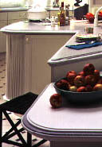

|
|
 Better yet is the inner beauty of Corian - its ability to stand up to life's daily calamities. Corian is nonporous, which makes it easy to clean. It resists stains because liquids can't penetrate. When Corian looks clean, it really is clean. Corian keeps its good looks longer because the solid beauty of Corian goes all the way through. Visit DuPont Corian's website for more color choices and other information. |